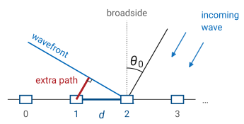
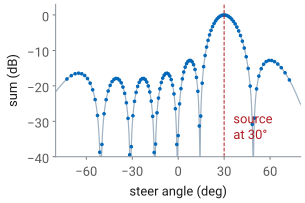
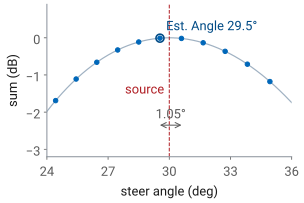
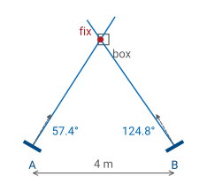
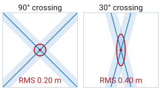

L19 - Direction Finding#
Direction Finding
How an array measures the direction a signal comes from, and how bearings from known places locate the transmitter.
Lesson 19 · Antennas, Phased Arrays, and Radar Systems · Dr. Neil Rogers
Slides
Learning Objectives
- I can implement beam steering on the ADALM-PHASER and verify the steered pattern against theory.
L18 worked out the phase each element needs to point the beam at a commanded angle, and the L18 Lab checked the steered pattern against that prediction. This lesson runs the same physics in the other direction. The transmitter is somewhere we do not know, and the array has to tell us which way it is. We start from the phase ramp an arriving wave puts across the array, show why sweeping the beam finds that ramp, work out how accurately the peak of the sweep gives the direction, and then combine directions measured from two or more known places into a position. The L19 Lab uses all of it to find one live HB100 among several boxes.
Finding a Transmitter
Direction finding locates a transmitter from its own signal.
One array measures a bearing: the direction the wave arrives from.
A passive receiver has no echo delay, so no range.
Bearings from two known positions cross at the transmitter.
Direction finding is the problem of locating a transmitter from the signal it emits: a radio beacon, a jammer, a lost aircraft’s emergency locator, or, in the L19 Lab, an HB100 hidden in a box. We do not control the transmitter, and we do not know its power or its antenna pattern. The one thing we can measure reliably is the direction its wave comes from, because that direction is written into the times at which the wave reaches each element of an array.
A direction measured from one place is a bearing. A bearing alone says which way to look but not how far. A radar gets range from the delay of its own echo, but a direction finder only listens, so there is no delay to measure. The received power does not give range either, since it depends on the transmitter’s power and pattern, which are unknown. Distance comes instead from geometry: two bearings taken from two known positions cross at the transmitter. The first half of this lesson measures a bearing; the second half turns bearings into a position.
The Arrival Ramp
A wave from \(\theta_s\) reaches element \(n\) with phase \(n\ kd\sin\theta_s\) relative to element 0.
The bearing is in that ramp: \(\sin\theta_s = \Delta\phi_s/kd\).
The PHASER sums the eight elements, so we cannot read the ramp directly.

L18 started from this picture. A plane wave arriving from \(\theta_s\), measured from broadside, travels an extra \(d\sin\theta_s\) to reach each successive element, so neighboring elements see the wave with a phase difference of \(kd\sin\theta_s\), and element \(n\) sees it \(n\ kd\sin\theta_s\) ahead of element 0. In L18 we chose the steer angle and computed the ramp to command. Here the source chooses the ramp, and the source’s direction is the unknown.
If we could measure the phase on each element, the bearing would follow from L18’s inverse problem: difference neighboring phases, unwrap, and take
Some direction finders work this way. They are interferometers: two or more antennas, each with its own receiver, and a direct phase comparison between them. The PHASER cannot do it with eight elements, because the two ADAR1000s add their four elements each into one channel before anything is digitized (L17, “The Hybrid Beamformer”). The individual element phases never reach the computer. What reaches it is a sum, and the sum depends on the phase we command.
Steer and Sum
Steer to \(\theta_0\): each delay takes away \(n\ kd\sin\theta_0\).
The sum is L16’s \(\vert AF_N(\psi)\vert\), largest at \(\psi = 0\).
So the sum peaks when \(\theta_0 = \theta_s\).

Steer the array to \(\theta_0\) and each element’s phase shifter delays its signal by \(n\ kd\sin\theta_0\). The arriving wave put a lead of \(n\ kd\sin\theta_s\) on element \(n\), so what is left on element \(n\) after the delay is \(n\psi\), with
The eight signals then add to \(\vert AF_N(\psi)\vert\), the array factor from L16 with \(\psi\) in place of its argument. It is largest, \(1\) after normalizing, at \(\psi = 0\), where the commanded delays exactly cancel the arrival lead and all eight signals add in phase. Any other steer angle leaves a residual ramp, and the sum falls off along the main lobe, through its nulls, and over the sidelobes.
The beam sweep steps \(\theta_0\) across the field of view and records the sum at each step. The figure shows what it records for a source at \(30^\circ\): the curve is the array pattern, centered on the source. This is the same function the L18 Lab measured, read the other way. There the source sat still and the curve showed where the beam pointed; here the beam moves and the peak shows where the source is.
Key Point
The sweep tries every phase ramp the hardware can set. The ramp that cancels the arrival ramp gives the largest sum, so the steer angle at the peak is the bearing. The GUI reports that angle as Est. Angle.
Accuracy Is Not Resolution
The main lobe is \(12.9^\circ\) wide, but the sweep locates its peak far more finely.
Noise moves the peak about \(0.2^\circ\) at \(30\ \text{dB}\) SNR.
Two sources closer than about \(15^\circ\) merge into one lobe.
At \(10.525\ \text{GHz}\), \(\lambda = 28.5\ \text{mm}\) and the array’s half-power beamwidth at broadside is
It is tempting to conclude that a bearing is only good to about \(13^\circ\), but the beamwidth limits something else. Finding the peak of one smooth lobe is a location estimate, and its precision is set by how much noise jitters the curve, not by how wide the curve is. The standard estimate for a beam that scans across a source is
which at an SNR of \(30\ \text{dB}\) (a factor of 1000) gives \(12.9^\circ/(1.6\sqrt{2000}) = 0.2^\circ\). An HB100 a few meters away is tens of decibels above the noise, so noise is not what limits the bearing.
The beamwidth sets resolution: the ability to tell two sources apart. Two sources closer than about one beamwidth produce lobes that overlap into a single peak somewhere between them, and the sweep reports one wrong bearing instead of two right ones. For the course array the first null sits \(\lambda/Nd = 0.254\) away in \(\sin\theta\), \(14.7^\circ\) at broadside, which is the usual measure of the separation two sources need. Every HB100 but one is switched off during the fox hunt so that the sweep only ever sees one source.
The Sweep Grid
\(0.91^\circ\) at broadside, \(1.05^\circ\) at \(30^\circ\), \(1.29^\circ\) at \(45^\circ\).
Est. Angle is off by up to half a step: \(0.53^\circ\) at \(30^\circ\).

The sweep cannot set any steer angle it likes. The ADAR1000’s phase shifters have 7 bits, so the progressive phase moves in whole steps of \(360^\circ/128 = 2.8125^\circ\) (L18, “Phase-Shifter Resolution”). At the HB100’s frequency, \(kd = 176.8^\circ\), so one step of progressive phase moves the beam by a fixed \(0.0159\) in \(\sin\theta\). The same step in \(\sin\theta\) is a larger step in angle away from broadside, because \(\delta\theta = \delta(\sin\theta)/\cos\theta\), the same stretching that broadens the steered beam in L18.
Est. Angle is the steer angle of the largest sample, so it can only land on the grid. Unless the source happens to sit on a grid point, the reported angle is the nearest one, off by up to half a step. In the figure the source is at \(30.0^\circ\) and Est. Angle reads \(29.5^\circ\). This is one reason to keep the source within about \(\pm 30^\circ\) of broadside: the grid step, the beamwidth, and the scan loss all grow with \(1/\cos\theta\) beyond that.
The Cone Angle
A line array measures the angle from its own axis, a cone, not a flat azimuth.
A source \(0.75\ \text{m}\) low at \(3\ \text{m}\) (\(14.0^\circ\) down) at \(30^\circ\) reads \(29.0^\circ\).
Keep every array and every box at the same height.
The phase ramp depends only on the extra path \(d\sin\theta\) along the line of elements, and every direction on a cone around the array’s axis gives the same extra path. A horizontal line array therefore measures the angle between the arriving wave and the plane perpendicular to the array, not the azimuth on a floor plan. For a source at azimuth az and elevation el, the measured angle is
When the source is at the array’s height, el is zero and the two angles agree. A box on the floor \(0.75\ \text{m}\) below a tabletop kit at \(3\ \text{m}\) is \(14.0^\circ\) down, and a source at \(30^\circ\) azimuth reads \(29.0^\circ\); at \(45^\circ\) it reads \(43.3^\circ\). The error always pulls the bearing toward broadside. Setting boxes and kits at the same height removes it.
The cone has a back half as well, a source behind the array at the mirror angle, but the PHASER’s patches sit over a ground plane and receive almost nothing from behind, so a bearing is always in front of the array.
Reflections
A reflection adds a second, weaker lobe to the sweep.
Within \(15^\circ\) of the source it pulls the peak: \(0.6^\circ\) at \(-20\ \text{dB}\), \(1.8^\circ\) at \(-10\ \text{dB}\), \(3.1^\circ\) at \(-6\ \text{dB}\).
Block the direct path and the reflection becomes the peak.
A whiteboard, a metal cabinet, or a person near the line of sight sends a second copy of the signal toward the array from a different direction. The array adds both, so the sweep is the sum of two patterns, one centered on the source and a weaker one centered on the reflector, with a relative phase set by the extra path the reflection travels. When the two directions are within about a beamwidth of each other, the lobes merge and the peak moves toward the reflection. The worst case over every phase, for a reflection \(5^\circ\) to \(15^\circ\) from the direct path, is a shift of \(0.6^\circ\) for a reflection \(20\ \text{dB}\) down, \(1.8^\circ\) at \(10\ \text{dB}\) down, and \(3.1^\circ\) at \(6\ \text{dB}\) down.
A reflection more than about \(20^\circ\) away forms its own lobe and moves the main peak much less. It becomes dangerous if someone stands between the kit and the source: the direct lobe drops, the reflection’s lobe is now the largest, and Est. Angle reports the direction of the whiteboard. A bearing that disagrees with the others by several degrees is most often this.
From Array Angle to Room Bearing
Term |
Source |
\(\sigma\) |
|---|---|---|
grid |
half a step at \(30^\circ\) |
\(0.53^\circ\) |
heading |
array edge on a taped line |
\(1.0^\circ\) |
multipath |
a weak reflection |
\(1.0^\circ\) |
noise |
\(30\ \text{dB}\) SNR |
\(0.2^\circ\) |
total |
root sum of squares |
\(1.5^\circ\) |
Est. Angle measures the angle from the array’s broadside, which is wherever the kit happens to face. To draw the bearing on a floor plan we need it in the room’s frame. Measure angles counterclockwise from a fixed room axis, seen from above. If broadside points along heading \(h\) and positive Est. Angle is the counterclockwise side, the room bearing is
Which physical side of the kit is positive depends on which way the kit faces; the L18 Lab found it by moving the source toward element E8. Get it wrong and a source at \(30^\circ\) is drawn at \(-30^\circ\), a \(60^\circ\) error, so check it with one shot at a known position before trusting any bearing.
The heading error adds directly to the bearing error, and in the room it is the largest term. Laying the array’s edge along a taped line holds \(h\) to about \(1^\circ\). The independent terms add as a root sum of squares:
Setting the heading by eye, about \(3^\circ\), raises the total to \(3.2^\circ\).
One Bearing Is a Line
The source lies somewhere along \(\hat{\mathbf u}\) from the kit at \(\mathbf p\).
Every point on that line has the same \(\hat{\mathbf n}\cdot\mathbf x\).
A bearing \(\beta\) measured from a kit at a known position \(\mathbf p\) says the source lies somewhere along the ray \(\mathbf p + r\hat{\mathbf u}\), with \(r\) unknown and positive. For computing a crossing it is easier to describe the line by its normal. The unit vector \(\hat{\mathbf n}\) is perpendicular to the bearing, and moving along the line never changes the component of position along \(\hat{\mathbf n}\), so every point \(\mathbf x\) on the line satisfies one linear equation,
One equation in two unknowns, the source’s \(x\) and \(y\), leaves a line of solutions, which is the statement that one bearing gives no range. A second bearing from a different position supplies a second equation, and two independent linear equations in two unknowns have one solution: the crossing.
A Two-Bearing Fix
Law of sines on the triangle; the box is at \((2.00,\ 3.00)\).

Worked example — the crossing of two bearings
Kit A sits at the room origin with its broadside at \(h_A = 60^\circ\); kit B sits \(b = 4\ \text{m}\) along the room’s \(x\) axis with \(h_B = 120^\circ\). A reads Est. Angle \(-2.6^\circ\) and B reads \(+4.8^\circ\), so the room bearings are
The two bearing lines and the baseline form a triangle. Its angle at A is \(\beta_A = 57.4^\circ\), its angle at B is \(180^\circ - \beta_B = 55.2^\circ\), and its angle at the source is the crossing angle, \(\gamma = \beta_B - \beta_A = 67.4^\circ\). The law of sines gives the range from A,
and the fix is \(3.56\ \text{m}\) out along A’s bearing:
The box was at \((2.00,\ 3.00)\ \text{m}\), where the true bearings are \(56.3^\circ\) and \(123.7^\circ\). Each Est. Angle read about \(1.1^\circ\) high, inside the \(1.5^\circ\) budget, and the fix lands \(0.08\ \text{m}\) from the box.
Many Bearings: Least Squares
With three or more bearings the lines do not meet at one point.
The fix is the point with the smallest sum of squared distances to the lines.
A \(2\times 2\) solve in numpy, the same for two kits or ten.
With two bearings the crossing is exact. A third bearing adds a third line, and because every bearing carries some error, the three lines form a small triangle rather than meeting at a point. The sensible fix is the point closest to all of them. The perpendicular distance from a point \(\mathbf x\) to line \(i\) is
and minimizing \(\sum_i e_i^2\) by setting its gradient to zero gives the
normal equations on the slide: a \(2\times 2\) matrix built from the normals,
times \(\mathbf x\), equals a 2-vector built from the normals and the kit
positions. One call to numpy.linalg.solve returns the fix. For two bearings it
reproduces the law-of-sines answer exactly; for more, it is the least-squares
compromise. The L19 Lab’s pre-lab has you write this as a short Python
function and test it on a supplied set of bearings.
Unweighted least squares treats every line as equally reliable. A bearing from a kit far from the source is less reliable in meters, as the next frame shows, so if the ranges differ a lot, weighting each term by \(1/r_i^2\) gives the better fix. In the fox hunt the kits are all a few meters out, and the unweighted form is close enough.
Cross-Range Error
At \(\sigma_\beta = 2^\circ\): \(0.10\ \text{m}\) at \(3\ \text{m}\), \(0.14\ \text{m}\) at \(4\ \text{m}\), \(0.17\ \text{m}\) at \(5\ \text{m}\).
A bearing constrains the source across its line, not along it.
A bearing error is an angle, but the fix is a position, so what matters is how far the error moves the line where the source is. A line rotated by \(\sigma_\beta\) about the kit moves sideways, at range \(R\), by
At \(\sigma_\beta = 2^\circ\), a little worse than the taped-heading budget, that is \(0.10\ \text{m}\) at \(3\ \text{m}\), \(0.14\ \text{m}\) at \(4\ \text{m}\), and \(0.17\ \text{m}\) at \(5\ \text{m}\). The error grows in proportion to range, which is why a closer kit gives a tighter line.
The error is all in one direction. A bearing says nothing about how far along the line the source is, so its uncertainty is a narrow strip, \(2\delta_\perp\) wide at one standard deviation and unbounded along its length. The second bearing’s strip is what limits the fix along the first one, and how well it does that depends on the angle between them.
How the Crossing Angle Sets the Error
Kits \(4\ \text{m}\) out, \(\sigma_\beta = 2^\circ\) |
RMS fix error |
|---|---|
2 kits, \(90^\circ\) crossing |
\(0.20\ \text{m}\) |
2 kits, \(30^\circ\) |
\(0.40\ \text{m}\) |
2 kits, \(15^\circ\) |
\(0.76\ \text{m}\) |
3 kits over \(120^\circ\) |
\(0.16\ \text{m}\) |

Where the two strips overlap is where the source can be. When the lines cross at \(90^\circ\), each strip limits the other’s long direction, and the overlap is a small square; its error ellipse is a circle of radius \(\delta_\perp\) in both directions. When they cross at a shallow angle \(\gamma\), the strips run almost parallel, and the overlap stretches into a long diamond along the bisector of the two lines. For two bearings with the same \(\delta_\perp\), the RMS error of the fix works out to
so a \(15^\circ\) crossing is almost four times worse than a \(90^\circ\) one with the same bearings.
The numbers in the table come from the least-squares fix. Each bearing contributes \(\hat{\mathbf n}\hat{\mathbf n}^{\mathsf T}/\delta_\perp^2\) to the information matrix, the inverse of that sum is the covariance of the fix, and the RMS error is the square root of its trace. A third kit helps less by adding a measurement than by guaranteeing that at least two of the three lines cross steeply: three kits spread over \(120^\circ\) do better than the best pair.
Choosing Where to Measure
Spread the kits so the bearings cross near \(90^\circ\).
Stay close, but keep every box within \(\pm 30^\circ\) of broadside.
Keep arrays and boxes at one height, with clear lines of sight.
Take a third bearing as a check.
Choosing where to stand is part of the measurement, because the geometry sets the error as much as the instrument does. The crossing angle matters most: two kits side by side see the source along nearly the same line and fix it poorly along that line, while two kits at right angles about the search area fix it well in both directions. Range matters next, since the cross-range error grows in proportion to it; but a kit too close to a wide search area cannot keep every box within \(\pm 30^\circ\) of its broadside, where the grid step and the beamwidth are smallest.
Height and line of sight remove the two systematic errors from earlier in the lesson: the cone-angle error pulls every bearing toward broadside when the source is above or below the array, and a reflector near the line of sight shifts the peak or replaces it. Finally, two bearings always cross somewhere, right or wrong. A third bearing is the only check that the first two are consistent.
The geometry also sets how close two boxes can be and still be told apart. A simulation of a row of boxes, with the fix assigned to the nearest box, names the right one 99% of the time at \(0.75\ \text{m}\) spacing with two kits crossing at \(90^\circ\) and \(\sigma_\beta = 2^\circ\), and 93% of the time at \(0.5\ \text{m}\).
Residuals and Outliers
Each bearing’s miss distance at the fix, in meters.
Compare it with that bearing’s own \(R_i\tan\sigma_\beta\).
A residual several times larger marks a bad bearing: a reflection or a sign error.
Once the least-squares fix is in hand, the distance from the fix to each line is that line’s residual. If all the bearings are good, each residual should be about the size of that bearing’s own cross-range error, \(R_i\tan\sigma_\beta\), roughly \(0.1\ \text{m}\) for a kit a few meters out. A residual several times that size says one bearing disagrees with the rest.
The usual causes are the two errors that the budget does not cover because they are blunders rather than noise: a reflection that took over the peak, and a heading or sign mistake that put the line on the wrong side of broadside. Check that kit’s setup, retake the bearing, or drop it and solve again with the others. With only two bearings the residuals are always zero, because two lines always meet exactly, which is another way of saying that two bearings cannot check themselves.
Summary: Measuring a Bearing
Symbol / idea |
What it is |
Number to remember |
|---|---|---|
\(\psi = kd(\sin\theta_s - \sin\theta_0)\) |
residual phase step after steering to \(\theta_0\) |
sum peaks where \(\theta_0 = \theta_s\) |
Est. Angle |
steer angle of the largest sample in the sweep |
on a grid \(0.0159\) apart in \(\sin\theta\) |
\(\theta_\text{HP}\) |
sets resolution of two sources, not accuracy for one |
\(12.9^\circ\) at broadside |
\(\sin\theta_\text{meas} = \sin(\text{az})\cos(\text{el})\) |
the cone angle a line array measures |
\(29.0^\circ\) for \(30^\circ\) at \(14^\circ\) down |
\(\beta = h + \theta_\text{est}\) |
room bearing from heading and Est. Angle |
\(\sigma_\beta \approx 1.5^\circ\) with a taped heading |
Summary: Locating the Source
Symbol / idea |
What it is |
Number to remember |
|---|---|---|
\(\hat{\mathbf n}\cdot\mathbf x = \hat{\mathbf n}\cdot\mathbf p\) |
one bearing line |
one equation, two unknowns |
\(\left(\sum \hat{\mathbf n}_i\hat{\mathbf n}_i^{\mathsf T}\right)\mathbf x = \sum \hat{\mathbf n}_i(\hat{\mathbf n}_i\cdot\mathbf p_i)\) |
least-squares fix |
a \(2\times 2\) solve |
\(\delta_\perp = R\tan\sigma_\beta\) |
cross-range error of one line |
\(0.14\ \text{m}\) at \(4\ \text{m}\), \(2^\circ\) |
\(\sigma_\text{fix} = \sqrt{2}\ \delta_\perp/\sin\gamma\) |
RMS error of a two-bearing fix crossing at \(\gamma\) |
\(0.20\ \text{m}\) at \(90^\circ\), \(0.76\ \text{m}\) at \(15^\circ\) |
residual \(e_i\) |
a bearing’s miss distance at the fix |
flags an outlier at several times \(R_i\tan\sigma_\beta\) |
The L19 Lab
The bench half of this lesson is the L19 Lab, the fox hunt: find the one live HB100 among numbered boxes from bearings you and a partner take on your two kits.
Looking Ahead
The L19 Lab: two kits, bearings from wherever you choose outside the keep-out zone, one fix, one box.
Bring the error budget and a plan for where to stand.
L20-L24 return to the pattern itself: beamwidth, tapering, squint, and nulls.
In the L19 Lab you and a partner find the one live HB100 among several numbered boxes. You choose where to put your kits, record each kit’s position and heading, read Est. Angle off the beam sweep, convert it to a room bearing, and solve for the fix. Come with this lesson’s error budget and a plan for where to stand that gives a steep crossing for any box in the zone.
The rest of Module 3 returns to the pattern the sweep traces. L20 measures beamwidth against element count, L21 separates the array factor from the element pattern, L22 trades sidelobe level for beamwidth with a taper, L23 covers beam squint and phase quantization, of which this lesson’s sweep grid is one consequence, and L24 steers nulls, which is how a direction finder or a radar rejects a second source that would otherwise pull its peak.